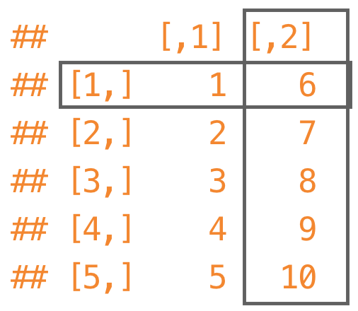
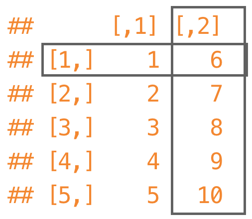

Data analysis in R
A gentle introduction
Joseph V. Casillas, PhD
Outline

- What is R?
- Why should you use it?
- Object oriented programming
- Data structures
- Manipulating dataframes
- Data visualization
- Data analyses
- Reproducible research
- Extras
What is R?
What is R?


- R is a language and environment for statistical computing and graphics
- GNU project
R environment

Object oriented programming
Object oriented programming
[...] language model organized around objects rather than "actions" and data rather than logic.
- The console
- R as a calculator
- Scripting language and objects
The console

- Gross
- Unintuitive
- Unproductive
R as a calculator

- You can do simple arithmetic using the console
2 + 2
## [1] 4
4^2
## [1] 16
(12 * 15) / 2
## [1] 90
- Like using a ferrari to get the mail
Scripting language
R is a scripting language

- Write code in .R file
- Send code to the console by highlighting in and typing cmd + enter
- Open the script 'introR.R' (File > Open file) and send some code to the console!
Scripting language
Comment your code
- You can include comments in your code by placing # at the beginning
- This is important so that you remember what you did and why!
# This is a comment
2 + 2
## [1] 4
Scripting language
OOP uses objects
- Objects are variables saved into your computers memory
- You assign objects to variables using
<-
x <- 2
print(x)
## [1] 2
- You can then refer to and manipulate variables
x + 4
## [1] 6
Scripting language
Functions
- The way we get things done in R is via functions
- A function in a command that performs an operation
sum()mean()lm()
- Functions take arguements
sum(x)= calculate the sum of the values in the vector 'x'mean(x)= calculate the mean of the values in the vector 'x'lm(y ~ x)= fit a linear model ('y' as a function of 'x')
Rhas many, many functions- If you can't find one that does what you want, you can create it and share it in an R package (i.e.
lingStuff)
Data structures
Data structures
- R uses several different types of data structures
- We will focus on three
- Vectors
- Matrices
- Dataframes
Vectors
- A vector is a sequence of data elements of the same basic type
- They commonly include chars or numbers
x <- c(1, 2, 3)
y <- c(4, 5, 6)
z <- c('a', 'b', 'c')
print(x); print(y); print(z)
## [1] 1 2 3
## [1] 4 5 6
## [1] "a" "b" "c"
Vectors
We can perform operations on vectors
x <- c(1, 2, 3)
y <- c(4, 5, 6)
x + 1
## [1] 2 3 4
x + y
## [1] 5 7 9
... but they have to be the same type of vector
y + z
## Error in y + z: non-numeric argument to binary operator
Matrices
 

- A matrix is a two dimensional vector
matrix(1:10, nrow = 5, ncol = 2)
## [,1] [,2]
## [1,] 1 6
## [2,] 2 7
## [3,] 3 8
## [4,] 4 9
## [5,] 5 10
- For most purposes, a matrix is not very convenient
Dataframes
- A dataframe is a matrix with column names
testDF <- data.frame(x, y, z)
print(testDF)
## x y z
## 1 1 4 a
## 2 2 5 b
## 3 3 6 c
- R comes with some dataframes installed
- Try using the command
head()with the following dataframeshead(mtcars)head(Titanic)
head(mtcars); head(USArrests)
## mpg cyl disp hp drat wt qsec vs am gear carb
## Mazda RX4 21.0 6 160 110 3.90 2.620 16.46 0 1 4 4
## Mazda RX4 Wag 21.0 6 160 110 3.90 2.875 17.02 0 1 4 4
## Datsun 710 22.8 4 108 93 3.85 2.320 18.61 1 1 4 1
## Hornet 4 Drive 21.4 6 258 110 3.08 3.215 19.44 1 0 3 1
## Hornet Sportabout 18.7 8 360 175 3.15 3.440 17.02 0 0 3 2
## Valiant 18.1 6 225 105 2.76 3.460 20.22 1 0 3 1
## Murder Assault UrbanPop Rape
## Alabama 13.2 236 58 21.2
## Alaska 10.0 263 48 44.5
## Arizona 8.1 294 80 31.0
## Arkansas 8.8 190 50 19.5
## California 9.0 276 91 40.6
## Colorado 7.9 204 78 38.7
Manipulating dataframes
Manipulating dataframes
- This is probably the hardest thing you have to learn to do in R (when you first start)!
- We can refer to rows and columns inside a dataframe using brackets
[] - Let's create a data frame in order to practice
x <- seq(1:30)
g <- gl(n = 2, k = 15, length = 30, labels = c('females', 'males'))
y.iq <- rnorm(n = 30, mean = 80, sd = 18)
y.wt <- rnorm(n = 30, mean = 170, sd = 50)
y.ht <- rnorm(n = 30, mean = 60, sd = 15)
df <- data.frame(subj = x,
group = g,
y.iq = y.iq,
y.wt = sort(y.wt),
y.ht = y.ht)